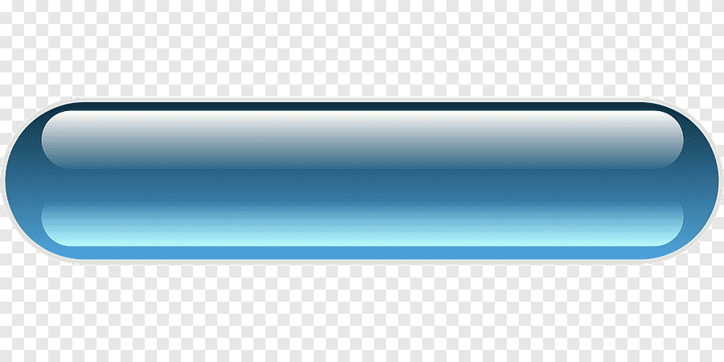
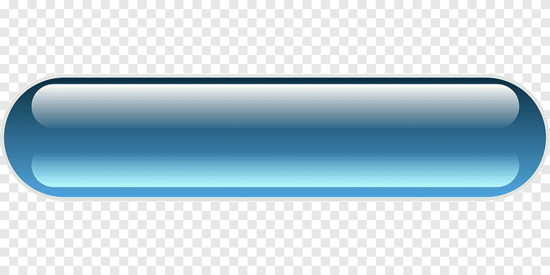
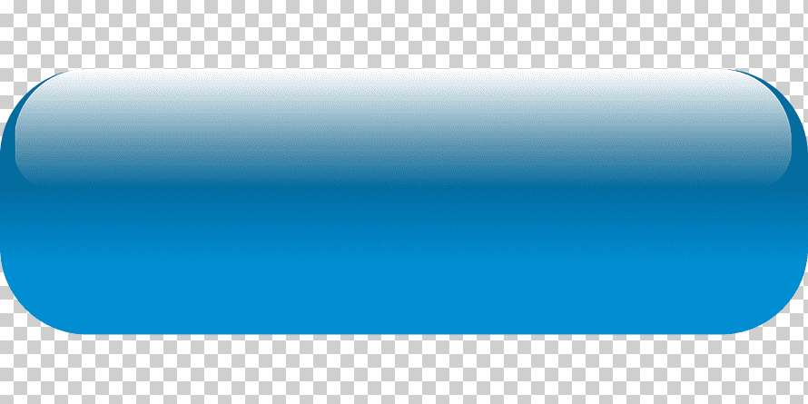

Acerca del Doctor

1Dr. Jorge Alvarado García
Posgrado en España e Israel Miembro titular de la sociedad americana de ortopedia de cirugía ortopédica Asociación: Colegio Mexicano de Ortopedia Especialidad: Traumatología y Ortopedia Cirugías: ARTROSCOPIA DE RODILLA: Es un procedimiento quirúrgico común en el cual una articulación (artro-) se visualiza (-scopia) usando una cámara pequeña. La artroscopia da a los médicos una visión clara del interior de la rodilla. Esto los ayuda a diagnosticar y tratar los problemas de rodilla. ARTROSCOPIA DE CADERA: Es la cirugía que se realiza haciendo cortes pequeños alrededor de la cadera y observando el interior con el uso de una cámara diminuta. También se pueden introducir otros instrumentos médicos para examinar o tratar la articulación de la cadera. ARTROSCOPIA DE HOMBRO: Es una cirugía en la cual se utiliza una pequeña cámara llamada artroscopio para examinar o reparar los tejidos dentro o alrededor de la articulación del hombro. El artroscopio se inserta a través de un pequeño corte (incisión) en la piel. [7:52 p. m., 22/4/2021] Aby: PRÓTESIS DE CADERA: La implantación de una Prótesis de Cadera permite sustituir una de las dos superficies articulares con el cartílago desgastado, o las dos: la cabeza (y el cuello del fémur) y el acetábulo. [7:52 p. m., 22/4/2021] Aby: PRÓTESIS DE RODILLA: Las Prótesis de Rodilla son reproducciones de los huesos de la zona de la rodilla, de metal, resinas o materiales cerámicos, que se colocan en el lugar de la articulación. [7:53 p. m., 22/4/2021] Aby: CELULAS MADRE: Su aplicación en el campo de la Traumatología (actualmente en lesiones de rodilla como la artrosis o la osteocondritis) aumenta las posibilidades en la Medicina Regenerativa ya que se reproduce el mismo método que utiliza el propio cuerpo para rehabilitar una lesión o recuperarnos de una enfermedad.
¡¡NO OLVIDES MANDAR TUS DATOS PERSONALES AL AGENDAR TU CITA!!
Lo que necesitas saber
 

La artroscopia de codo es una técnica quirúrgica consistente en la utilización de una cámara de visión de pocos milímetros y material de pequeñas dimensiones para realizar actos quirúrgicos en la articulación del codo

Es la cirugía que se realiza haciendo cortes pequeños alrededor de la cadera y observando el interior con el uso de una cámara diminuta. También se pueden introducir otros instrumentos médicos para examinar o tratar la articulación de la cadera.

Las células madre son la materia prima del cuerpo; a partir de ellas se generan todas las demás células con funciones especializadas. Bajo las condiciones adecuadas en el cuerpo o en un laboratorio
Que dicen nuestros clientes
Fernando
Son consultas increibles, donde le trato y lo que nos mandan son adecuados, al menos yo si lo recomendaria

Abigail
El trato es excelnte, el doctor buenisimo, es sin duda muy buen tratamiento el que mandan y la recuperacion pasable
Nuestros servicios

Consultas Generales
Hacemos el abordaje integral del paciente cuando este acude al médico por cualquier motivo. Se realiza una evaluación general con la finalidad de prevenir y detectar factores de riesgo antes de que de aparezca algún problema médico.

Consultas especializadas
consiste en la atención brindada por un médico especialista, que incluye un conjunto de actividades mediante las cuales se evalúa el estado de salud y los factores de riesgo biológicos, sicológicos, sociales y culturales ...

Manejo adecuado de Medicina
Manejamos adecuadamente madicina de patente, sin ningun tipo de anormalidad en ella, de igual forma mantenemos el orden y la preparacion adecuada para cualquier area recurrente